Video
Video from this LichenLingo
Concept and Background Research
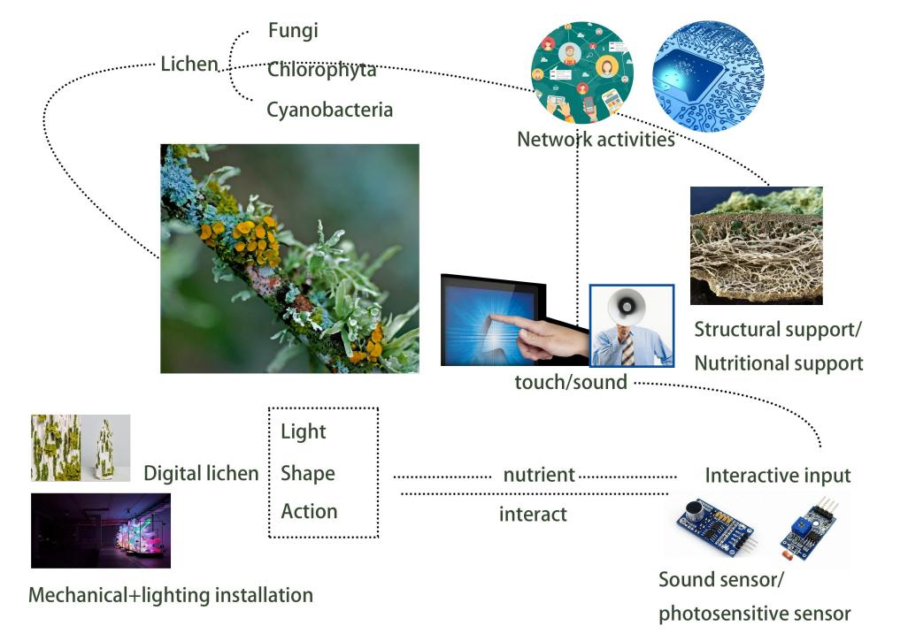1866年至1896年间，芬兰地衣学家尼兰德在巴黎卢森堡花园观察到，人类城市化活动导致地衣消失，这清楚地提醒人们，人类行为可能对自然世界产生深远影响。人类活动可以直接或间接影响植物的生长和分布，在21世纪，人类活动已经转向网络社会，数字社会的兴起改变了人类活动的方式，对数字世界的地衣生物姿态有了更多的猜测。根据此背景，我构思了将人类姿势运动抽象为地衣中的营养物质的想法，以创造新的基于人类姿势活动的数字地衣生物。
Technical Implementation
 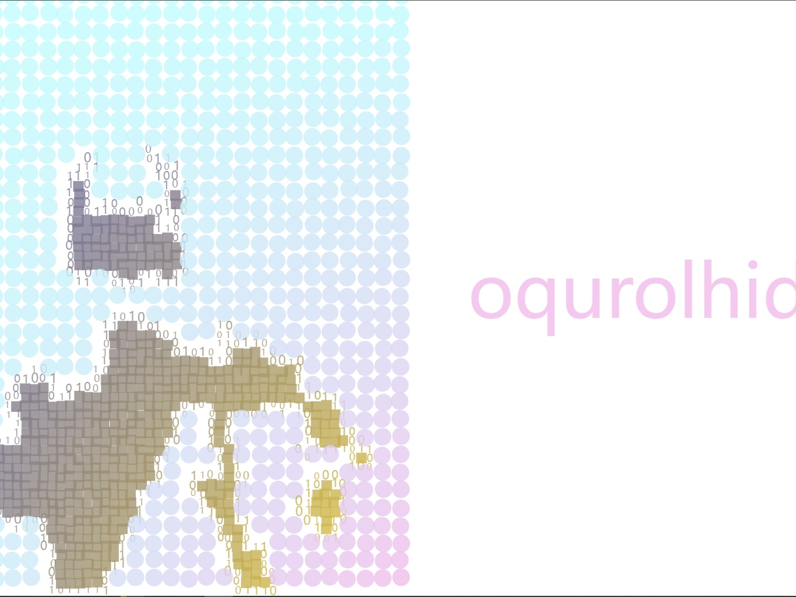
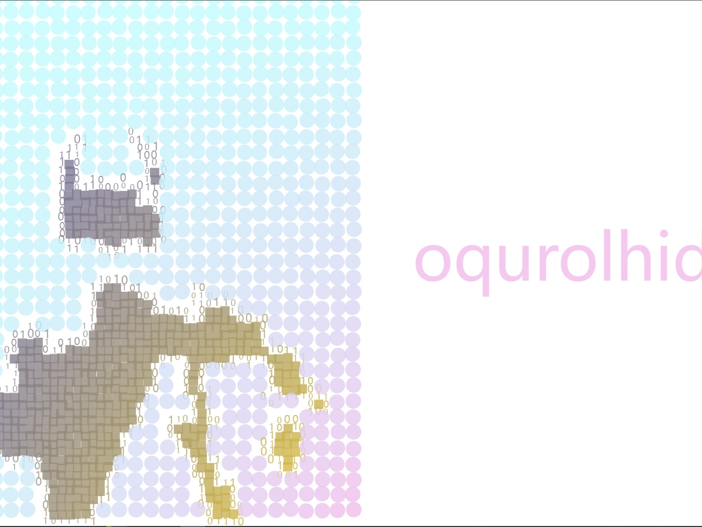
该项目是一项实验性工作，该项目的核心涉及一个独特的机械传动系统，INPUT采用光敏电阻（LDR），OUTPUT采用SG90伺服电机。在这种结构中，LDR光敏电阻充当感觉受体，对环境光强度的变化做出反应。当光照强度改变时，伺服电机将驱动直线齿轮往复运动，这是为了打开和关闭单个地衣的生长状态。这种机械结构控制了单个地衣生长状态的开启和关闭，有效地调节了它对环境线索的反应。其目的是将人类的影响抽象为植物生长元素。同时，该项目通过P5js中的Posenet技术集成了计算机视觉。PoseNet姿势检测器被初始化以从计算机相机捕获人体姿势信息，然后将其传输到基于Unity的地衣模型。这些数据用于生成虚构的地衣名称，生成速度与人类活动直接相关。更快的人类活动导致更快的地衣名称生成，而较慢的活动对应于更悠闲的命名过程。地衣名称是通过添加地衣命名特征随机生成的。此外，姿势数据会中继续传递到Unity。
在Unity中，地衣模型的外观是使用Shader操纵的。这种动态颜色效果基于时间和纹理噪波，用户定义的属性（如速度、强度、比例、颜色指数和随机种子）决定了颜色的外观。作为补充，C#脚本创建了一个WebSocket服务器，以链接Unity对象和外部数据源之间的通信。该代码建立了一个用于数据传输的WebSocket连接，然后用于更新Unity场景中对象的外观。调试信息也显示在控制台中，以监控WebSocket通信和数据处理过程。该项目融合了电脑技术和生物学，模糊了人类影响和植物生长元素之间的界限，为这些交织的世界提供了独特而引人入胜的探索。
Images

 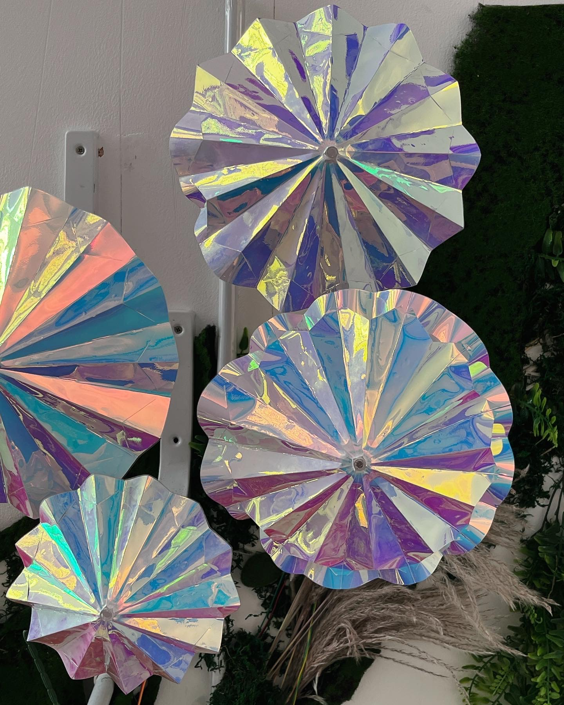 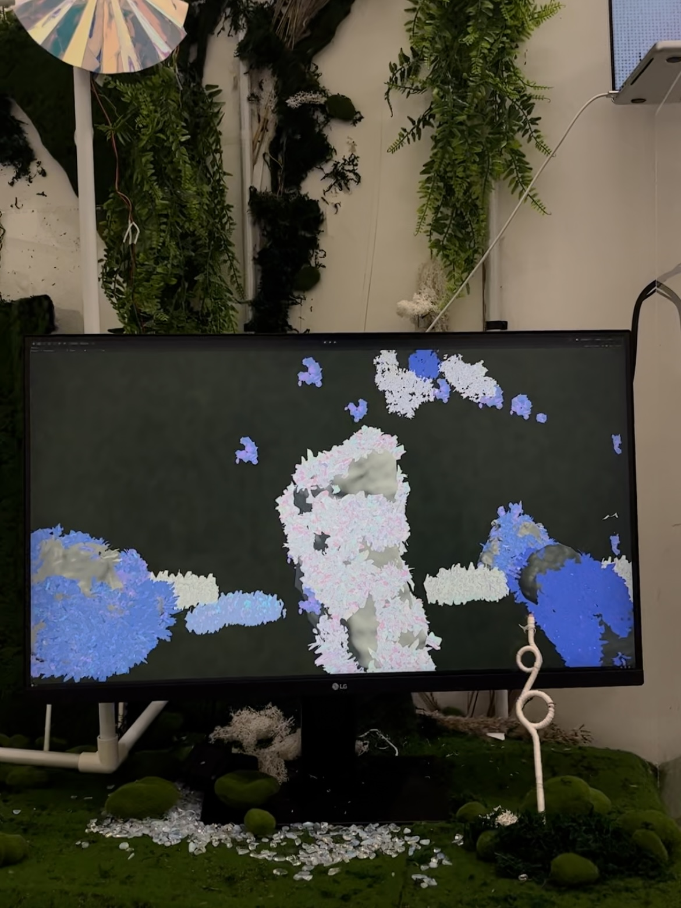
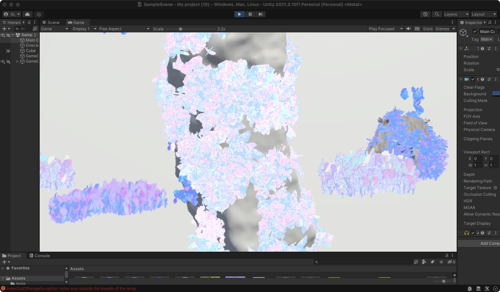 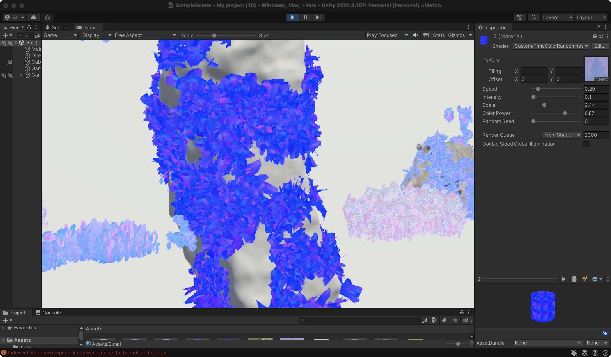
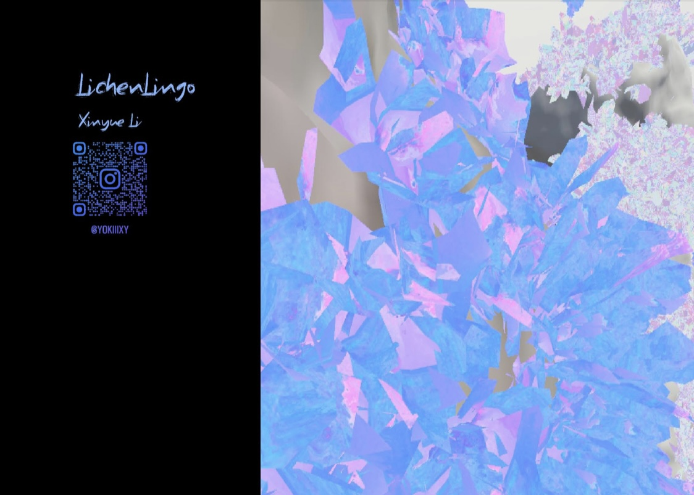
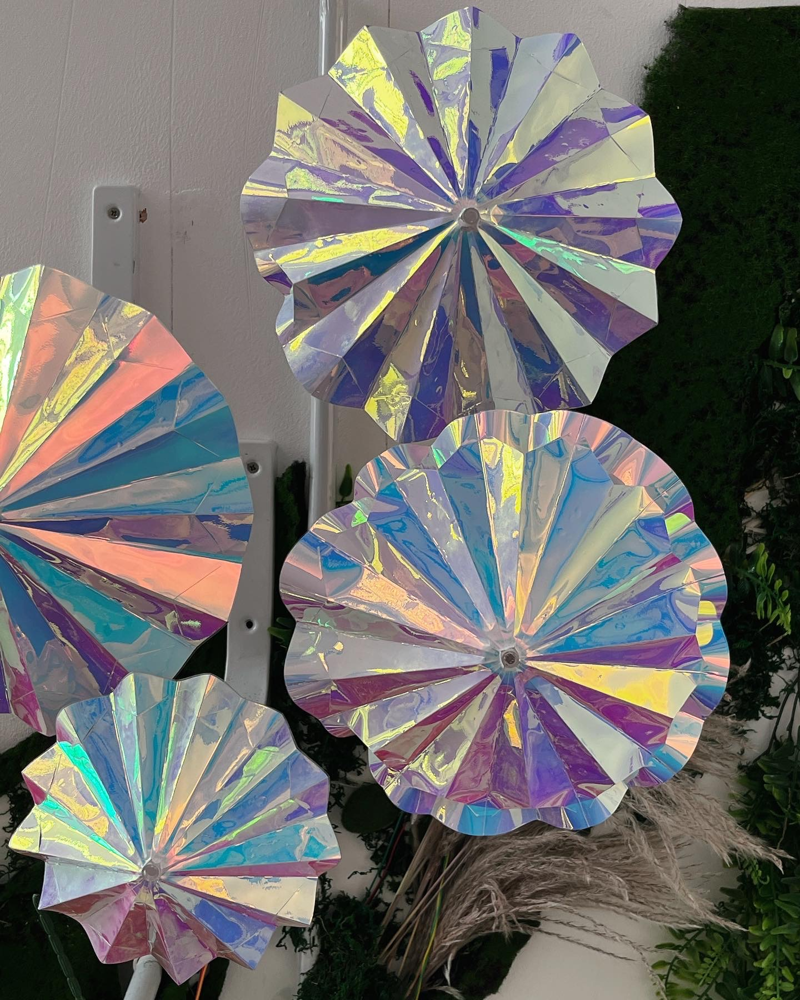 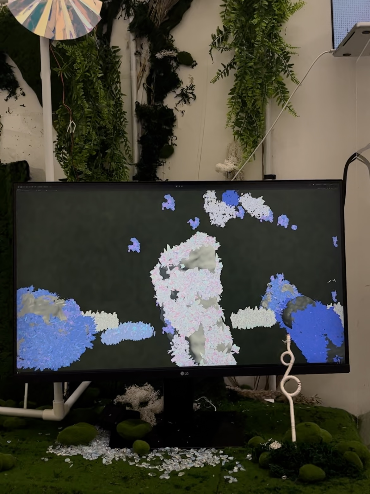
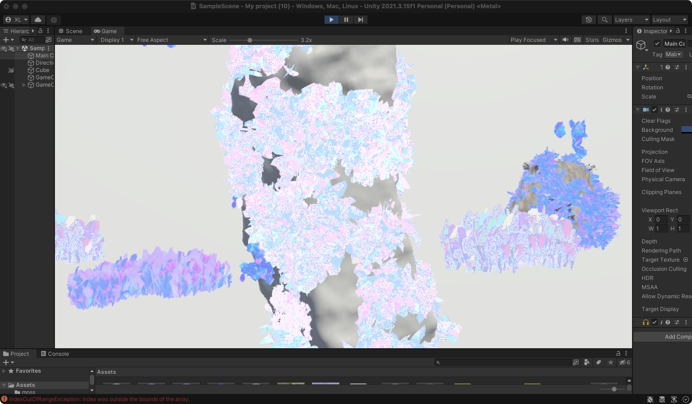 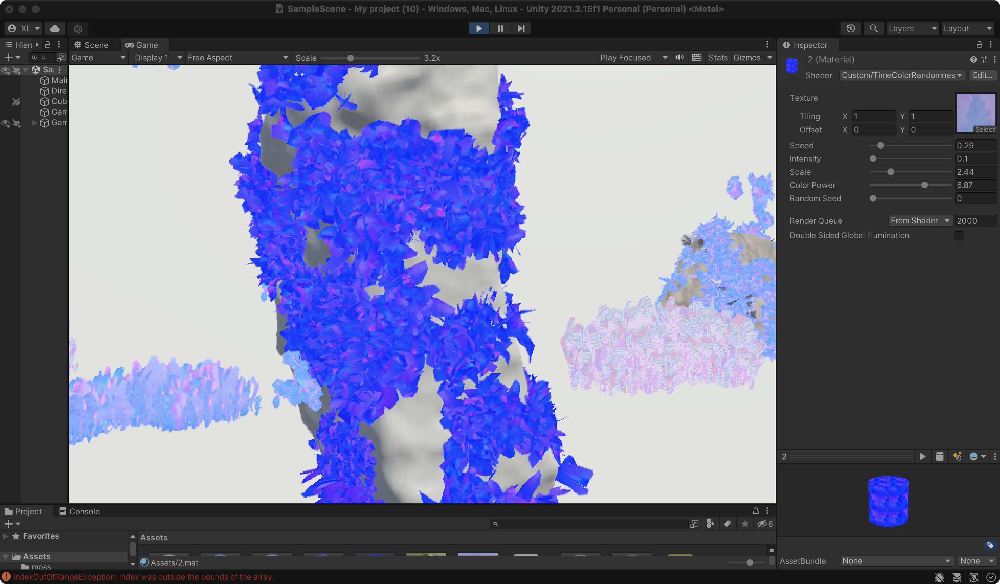
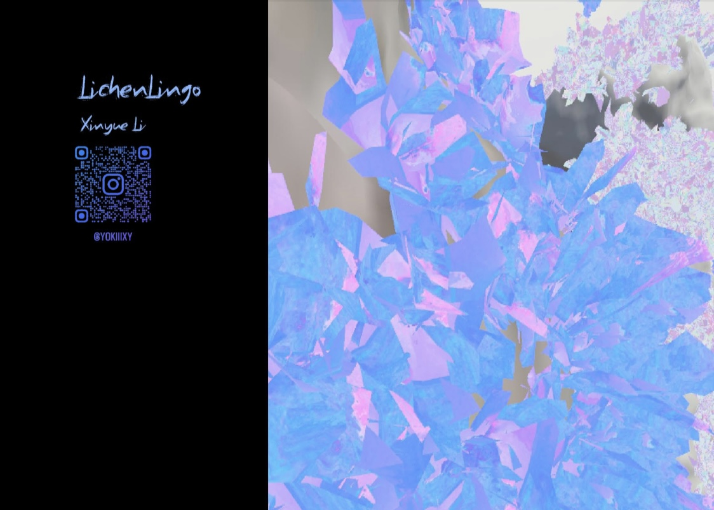